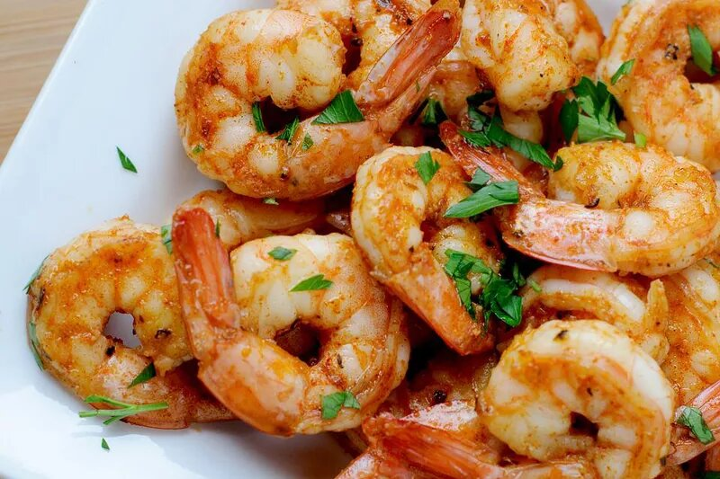

Spicy Grilled Shrimp

An image of Spicy Grilled Shrimp
Spicy Grilled Shrimp is a tantalizing dish that features succulent shrimp marinated in a fiery blend of spices.
Grilled to perfection, the shrimp are infused with smoky flavors and a kick of heat. This dish offers a harmonious
balance of spice and juiciness, making it a delicious and satisfying seafood delight.
Ingredients:
- 1 pound of large shrimp, peeled and deveined
- 2 tablespoons of olive oil
- 2 cloves of garlic, minced
- 1 teaspoon of paprika
- 1/2 teaspoon of cayenne pepper
- 1/2 teaspoon of ground black pepper
- 1/2 teaspoon of salt
- 1 tablespoon of fresh lemon juice
- Fresh cilantro or parsley for garnish (optional)
Cooking Steps:
- In a bowl, combine olive oil, minced garlic, paprika, cayenne pepper, black pepper, salt, and fresh lemon juice. Mix well to create the marinade.
- Add the peeled and deveined shrimp to the marinade. Toss until the shrimp are evenly coated. Let them marinate for about 15-30 minutes to allow the flavors to infuse.
- Preheat the grill to medium-high heat.
- Thread the marinated shrimp onto skewers, leaving a little space between each shrimp.
- Place the skewers on the preheated grill and cook for 2-3 minutes per side, or until the shrimp turn pink and opaque.
- Remove the skewers from the grill and transfer the grilled shrimp to a serving plate.
- Garnish with fresh cilantro or parsley, if desired.
- Serve the Spicy Grilled Shrimp hot as an appetizer or as part of a main course.
- Enjoy the deliciously spicy and flavorful grilled shrimp!